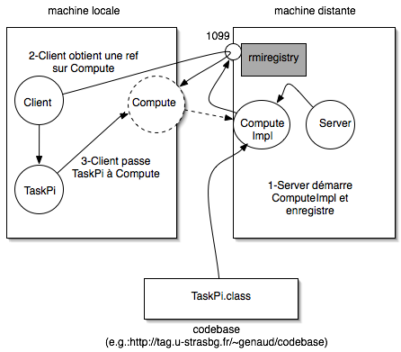

LocateRegistry.getRegistry() instancie une souche qui implémente l'interface Remote java.rmi.registry.Registry en demandant le registre sur localhost et le port 1099 (défauts). Utiliser
getRegistry(String, int) pour spécifier hôte et port.
bind() est ensuite invoquée sur le stub pour que le registre attache le code de une_op au nom arbitraire "Operation".
Exemples :
Registry registry = LocateRegistry.getRegistry("foo.services.com");
SomeService service = (SomeService)registry.lookup("toto");
service.requestService(...);
Le serveur
En utilisant la classe
java.rmi.Naming :
import java.rmi.*;
import java.net.*;
public class Serveur {
public static void main(String [] args) {
try {
OperationImpl une_op = new OperationImpl ();
Naming.rebind("rmi://localhost/Operation",une_op) ;
System.out.println("Serveur pret");
}
catch (RemoteException re) { System.out.println(re) ; }
catch (MalformedURLException e) { System.out.println(e) ; }
}
}
Pour des raisons de sécurité les opérations bind, rebind ou unbind
se font toujours avec un registry local.
Le client
Client.java : le code utilisant l'interface Operation.
Avant d'invoquer une méthode de l'interface, il faut obtenir une référence.
Comme pour le serveur, deux classes permettent de le faire :
- Avec la classe de plus haut niveau java.rmi.Naming :
méthode lookup()
- Avec la classe de bas niveau java.rmi.Registry
et sa méthode lookup().
Compilation
javac *.java
rmic OperationImpl # inutile pour JVMs provenant de JDK >= 5.0
mkdir serveur
mkdir client
for i in Client OperationImpl_Stub Operation
do cp $i.class client ; done
for i in Serveur OperationImpl_Stub OperationImpl_Skel\
OperationImpl Operation
do cp $i.class serveur ; done
La commande rmic OperationImpl génère
OperationImpl_Stub.class et OperationImpl_Skel.class.
Compilation : fichiers
| client | serveur |
|---|
| Client.class | Serveur.class |
| Operation.class | OperationImpl.class |
| | OperationImpl_Skel.class |
| OperationImpl_Stub.class | OperationImpl_Stub.class |
Exécution
- Lancer le serveur
cd serveur
rmiregistry &
java -Djava.security.policy=java.policy Serveur
- Lancer le client
cd client
java Client localhost
Lancer "start rmiregistry" sous windows, ou monopoliser un terminal pour lui.
Lancer le rmiregistry dans le même répertoire que le serveur (où se trouve OperationImpl_Stub.class)
est bien commode car le CLASSPATH contient le répertoire courant par défaut. Si vous lancez rmiregistry ailleurs, il faut que le CLASSPATH pointe vers où se trouve OperationImpl_Stub.class.
Exemple 2: Passage d'objets
RMI permet de passer en paramètres des méthodes, des types simples, mais
aussi des objets construits.
Comme précédemment, les arguments passés doivent être serializable.
La sérialisation écrit la structure de l'objet
dans un flux transmissible sur le réseau, mais n'incorpore pas au flux les méthodes.
Exemple 2: Passage d'objets en paramètres
Imaginons un objet dont le rôle est d'exécuter du code.
|

|
- Il accepte en entrée un objet quelconque qui a une méthode execute()
(appelons Task l'interface correspondante),
- télécharge dynamiquement le code de l'implémentation (cherche dans codebase),
- invoque execute(),
- retourne le résultat au client.
|
Objet Remote Compute (interface)
Comme précédemment, on doit spécifier au client l'interface offerte par
l'objet distant. On la nomme Compute.java.
import java.rmi.Remote;
import java.rmi.RemoteException;
public interface Compute extends Remote {
Object executeTask(Task t) throws RemoteException;
}
L'unique méthode accepte un objet de classe Task.
Objet Remote Compute (impl.)
Sur le serveur, l'implémentation
ComputeImpl.java :
import java.rmi.server.UnicastRemoteObject ;
import java.rmi.RemoteException ;
import java.net.* ;
public class ComputeImpl extends UnicastRemoteObject implements Compute
{
public ComputeImpl() throws RemoteException {
/* constructeur de la classe mere UnicastRemoteObject */
super();
}
public Object executeTask(Task t) {
/* les objets passes en arg. doivent fournir une methode execute() */
return t.execute();
}
}
La classtask passé en paramètre
L'interface Task.java : spécifie
import java.io.Serializable;
public interface Task extends Serializable {
Object execute();
}
L'objet task passé en paramètre (impl)
L'implémentation TaskPi.java:
public class TaskPi implements Task {
public TaskPi(int digits) { //constructeur
this.digits = digits;
}
public Object execute() {
return computePi(digits);
}
public static BigDecimal computePi(int digits) {
/* ... calcul compliqué ...*/
return pi.setScale(digits,BigDecimal.ROUND_HALF_UP);
}
}
Le client Client.java
import java.rmi.*;
import java.math.*;
/* Un code qui utilise l'objet remote Compute doit (1) obtenir une reference vers cet objet, (2) creer un objet Task, (3) appeler l'execution de la tache en passant la tache a Compute */
public class Client {
public static void main(String args[]) {
if (System.getSecurityManager() == null) {
System.setSecurityManager(new RMISecurityManager());
}
try {
String name = "rmi://" + args[0] + "/Compute";
/* obtenir une ref. sur un objet Compute */
Compute engine = (Compute) Naming.lookup(name);
/* instancie un objet de calcul */
TaskPi ma_tache = new TaskPi(Integer.parseInt(args[1]));
/* faire calculer la tache envoyee et recuperer */
BigDecimal pi = (BigDecimal) (engine.executeTask(ma_tache));
System.out.println(pi);
} catch (Exception e) {
System.err.println("Exception du client : " + e.getMessage());
e.printStackTrace();
}
}
}
Le serveur Server.java
import java.rmi.*;
import java.net.*;
public class Server {
public static void main(String [] args) {
if (System.getSecurityManager() == null) {
System.setSecurityManager(new RMISecurityManager());
}
try {
ComputeImpl engine1 = new ComputeImpl ();
Naming.rebind("rmi://localhost/Compute",engine1) ;
System.out.println("Objet Compute enregistré dans le registry.");
System.out.println("Serveur pret.");
}
catch (RemoteException re) { System.out.println(re) ; }
catch (MalformedURLException e) { System.out.println(e) ; }
}
}
Comme dans l'exemple de base, le serveur instancie un objet ComputeImpl et l'enregistre dans le registry sous l'identifiant Compute.
Gestionnaire Sécurité
L'une des principales difficultés de RMI est la gestion de la sécurité.
- Il est nécessaire de modifier la politique très restrictive de sécurité par défaut ($JAVA_HOME/lib/security/java.policy).
La méthode préconisée est d'associer un fichier décrivant la politique avec la JVM lancée
(-Djava.security.policy=fichier)
(syntaxe).
- Un programme n'a pas de gestionnaire de sécurité par défaut, et empêche certaines opérations (comme le téléchargement de code). On peut en créer un:
Code base
- Quand un client invoque une méthode d'un objet distant, le rmiregistry (lui aussi distant) retourne une référence à cet objet (stub). Le rmiregistry doit pouvoir accéder aux classes correspondant à ce stub.
-
Le rmiregistry cherche d'abord dans son CLASSPATH la définition de la classe.
-
Ensuite, la recherche se fait dans codebase, spécifié au lancement du serveur
(qui enregistre l'objet).
-Djava.rmi.server.codebase=
http://icps.u-strasbg.fr/~genaud/codebase/
-
Le client pourra alors télécharger la définition des classes de la codebase.
Remarque: en utilisant une codebase, le serveur doit pouvoir accéder avec son CLASSPATH aux definitions de classes, mais le rmiregistry ne doit pas pouvoir le faire.
Compilation : fichiers
| client | serveur |
|---|
| Sources |
| Client.java | Server.java |
| Task.java | Task.java |
| TaskPi.java |
|
| Operation.java | Operation.java |
| | OperationImpl.java |
| javac *.java |
| TaskPi.class | |
| | OperationImpl.class |
| | OperationImpl_Skel.class |
Exercice
Ecivez un système de
polling de messages, avec plusieurs clients,
un serveur:
- un client envoie un message vers un serveur connu,
- le serveur enregistre le message du client,
- et lui renvoie tous les messages non encore lus provenant d'autres clients.